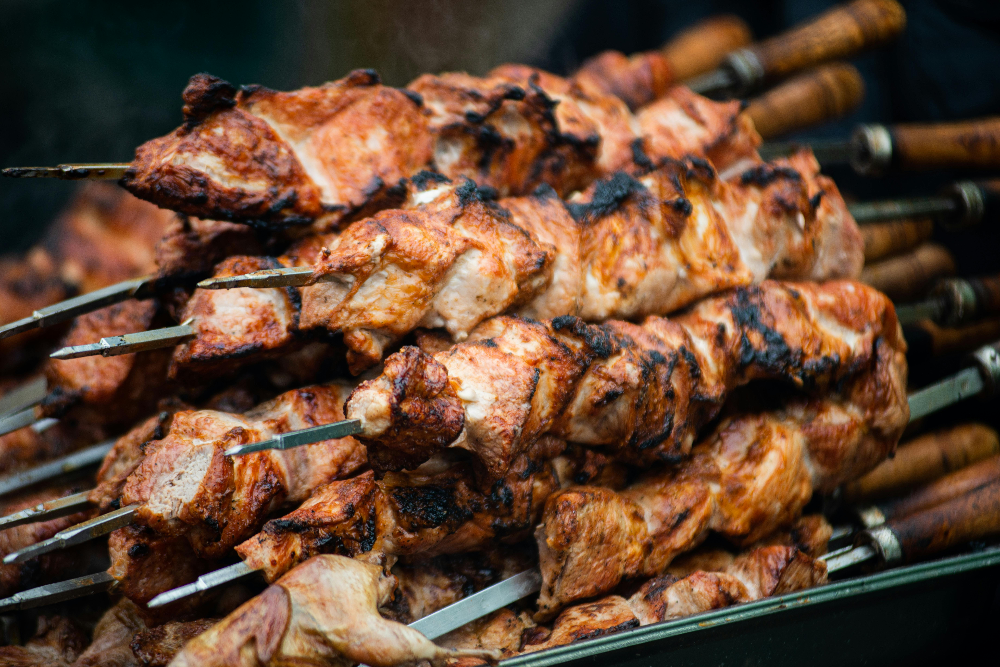

Grillad kyckling med krispigt skinn, glaserad i husets rökiga BBQ-sås med honung, vitlök och chili.
Vår BBQ-kyckling är en smakrik klassiker med perfekt balans mellan sötma, rökighet och hetta. Kycklingen marineras i vår egen BBQ-sås med honung, vitlök och en touch av chili, och grillas sedan tills skinnet blir krispigt och karamelliserat medan köttet behåller sin saftighet. Varje tugga bjuder på kontrasten mellan krispig yta och mör insida – ett måste för alla som älskar äkta grillat. Serveras gärna med grillade grönsaker eller majsbröd för en komplett upplevelse.